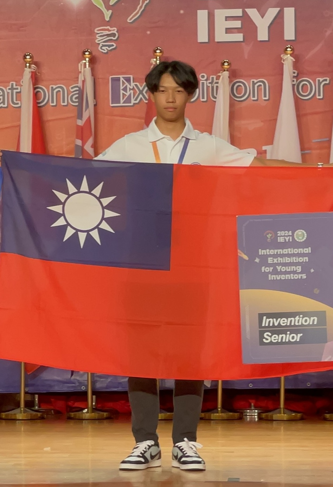
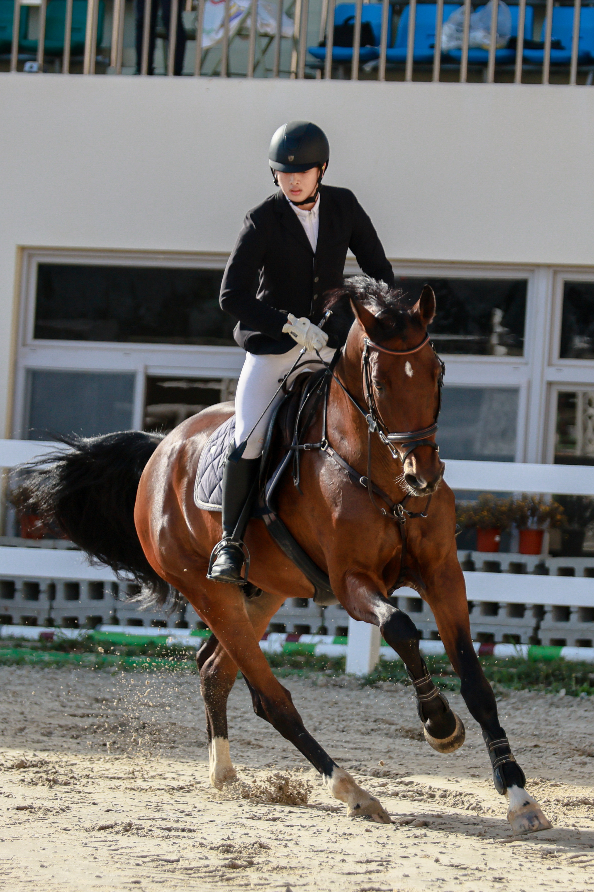

林星佑
當初會想讀數位實中是因為我覺得這間高中可以讓我把重心放在我的專業上面，利用個需課的時間精進電子電機以及程式設計，再利用比賽當作成果檢視

楊鈞
112年FEI超越世界賽60CM 冠軍、80CM 優勝
46屆全國中正盃障礙超越80cm 冠軍
2022 EMPOWER U15冠軍、全明星先發
2024 B.I.G聯盟全明星
當初來數位實中是因為在國三的時候大概就知道以後要做什麼，所以不會想走傳統的學測，數位實中的個別需求課程是一開始最吸引我的也是對我提升自己有做多幫助的，因為我可以有更多的時間去馬術訓練跟重量訓練

詹啟翔
AIS3 MyFirstCTF 2024 銀質獎 rk.10
AIS3 2024 學員結業
HolyHigh Training第九屆 高階培訓學員
CGGC 2024 網路守護者挑戰賽 rk.23
數位實驗高中提供了不同的思維模式，培養自學能力與高自律性，幫助我規劃未來、突破學習瓶頸，適合不想走傳統升學路線的人。